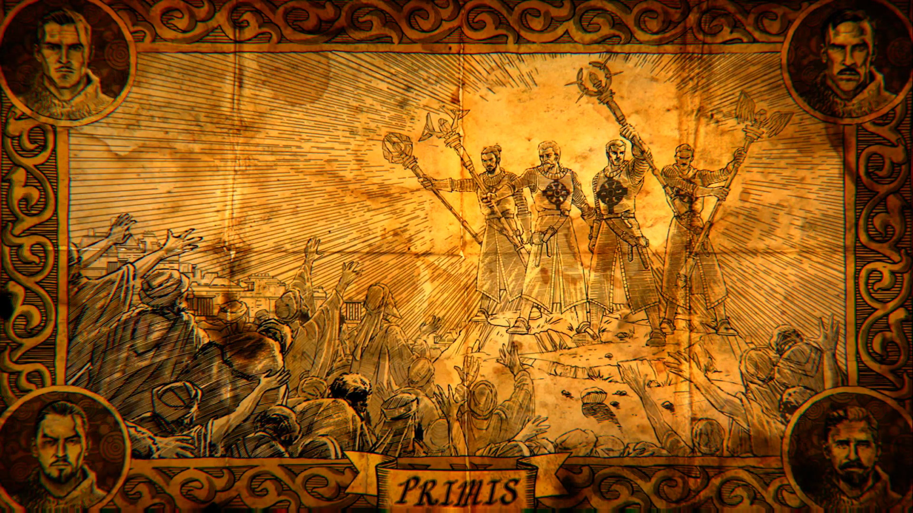
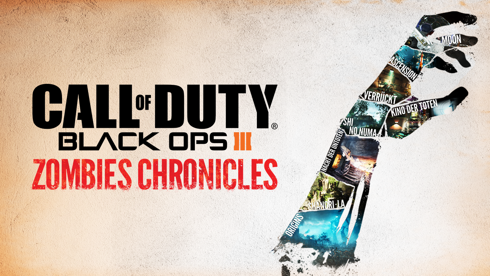
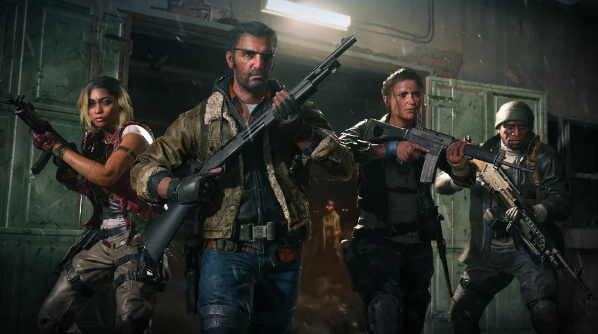
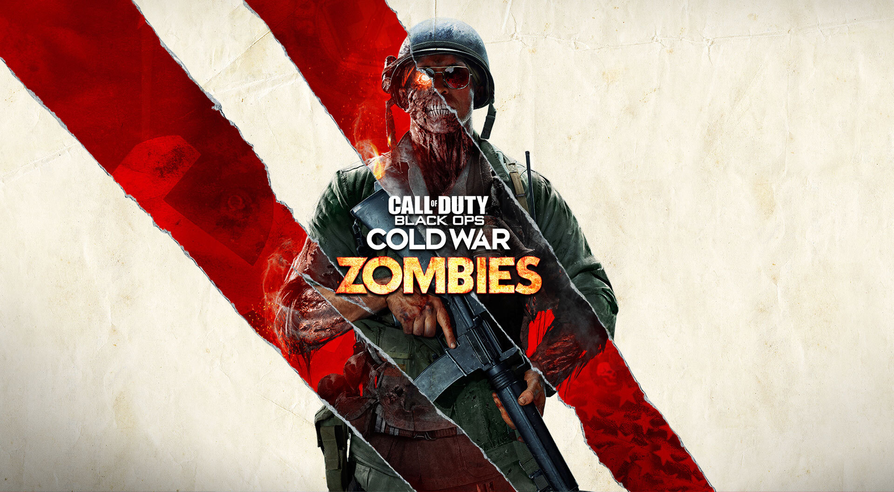
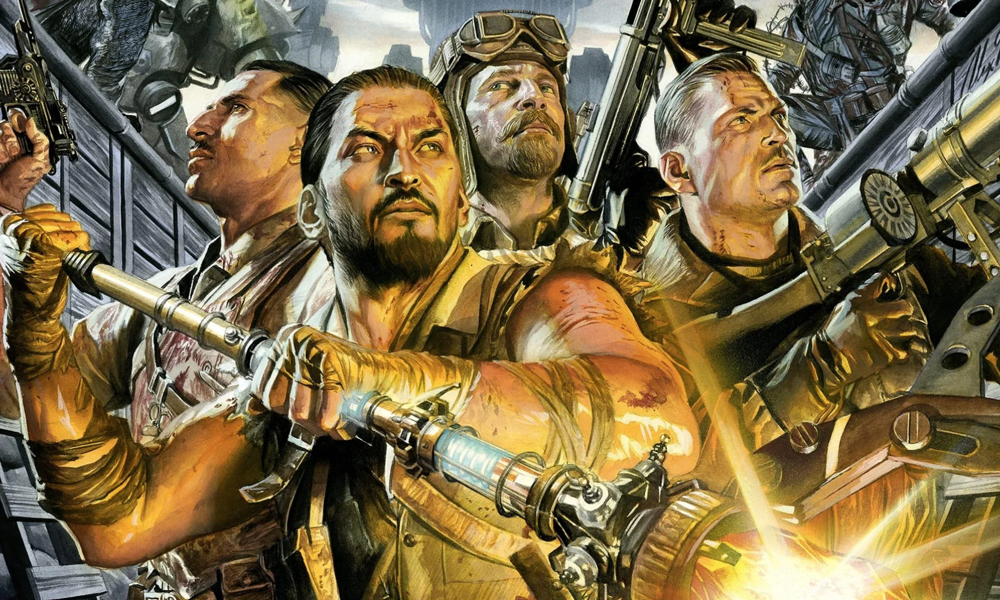

ZOMBIES ISTEREG WIKI

COD Zombies
Desde COD WW, se introdujo el modo Zombies en la franquicia. Este modo se caracteriza por ser un juego cooperativo en el que los jugadores deben sobrevivir a oleadas de zombies mientras resuelven acertijos y desbloquean objetos únicos.
Black Ops 3
Posiblemente de los lanzamientos mas aclamados y recordados de la franquicia. Estamos hablando de, para muchos, el cod con el mejor modo zombies al incluir The Giant al poco tiempo de lanzamiento. Este COD tuvo su set completo de mapas y, hata ahora, es el unico COD al cual le han dedicado un DLC exclusivamente a su modo zombies, siendo este Zombies Chronicles.
" Experimenta algunos de los mapas más emocionantes en la historia de Zombies en su gloria Full HD, incluyendo Shangri-La , un santuario legendario perdido en una jungla exótica donde los no muertos acechan dentro de un traicionero laberinto de cavernas subterráneas; Kino Der Toten , un cine abandonado lleno de enjambres de Crawler Zombies y trampas de fuego ; Shi No Numa , un pantano de muerte en una jungla sofocante; Origins , un sitio de excavación alemán abandonado, ¡y más! "
— Descripción oficial
Zombies Chronicles es el quinto paquete de mapas DLC para Call of Duty: Black Ops III . Incluye ocho mapas de zombis diferentes de Call of Duty: World at War , Call of Duty: Black Ops y Call of Duty: Black Ops II , todos ellos rehechos con el motor y la mecánica de Black Ops III .



